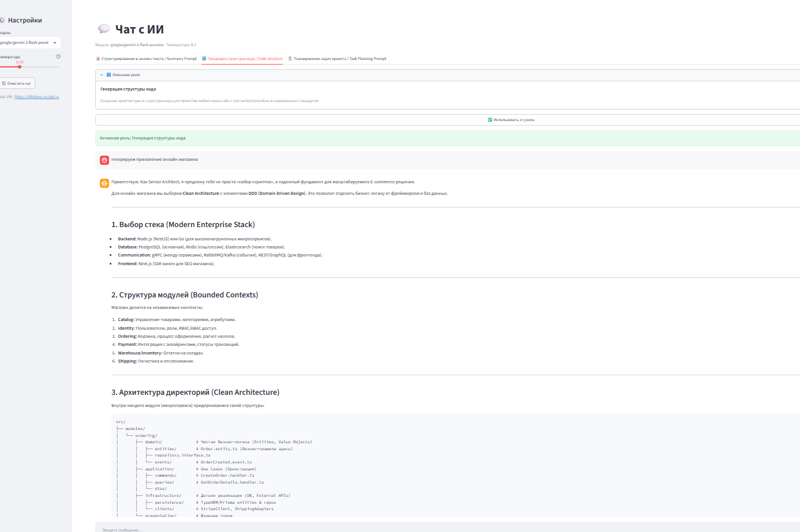

🖼 Боковая панель настроек

⚙️ Сайдбар
- Модель — выпадающий список из 6 LLM
- Температура — слайдер 0.0–2.0, шаг 0.05
- Очистить чат — сохраняет активную роль
- Base URL — отображается для отладки
Заголовок страницы:
💬 Чат с ИИ — подпись показывает модель и температуру.🤖 Сравнение моделей

Claude Haiku 4.5
Ответ с учётом контекста и системного промпта роли.
Сравнение моделей в проекте:
результат llm1.png— Cohere North Miniрезультат llm2.png— AllTokens Paretoрезультат 3.png— Gemini 3 Flashрезультат llm6.png— Claude Haiku 4.5